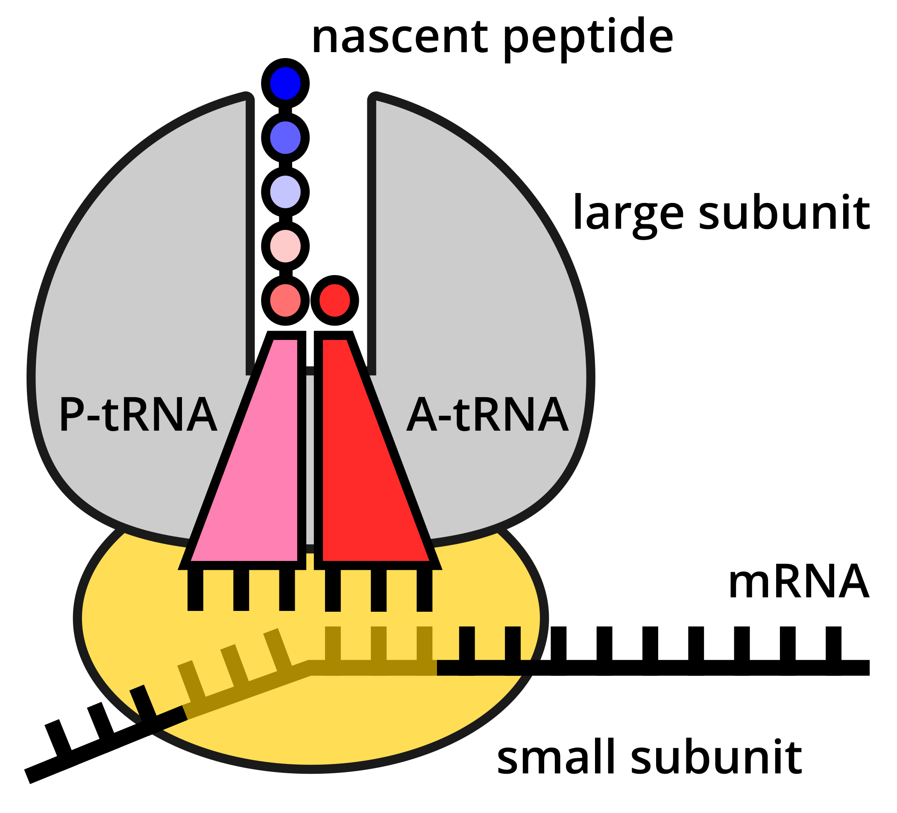
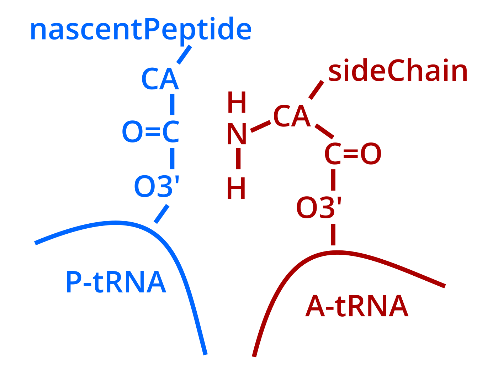
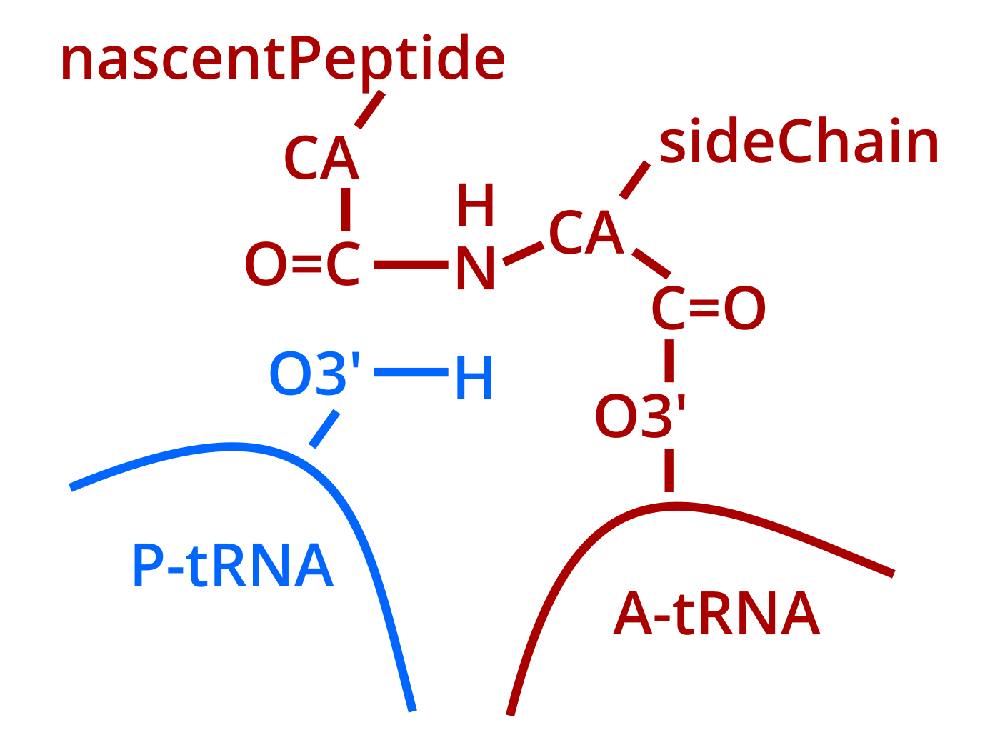
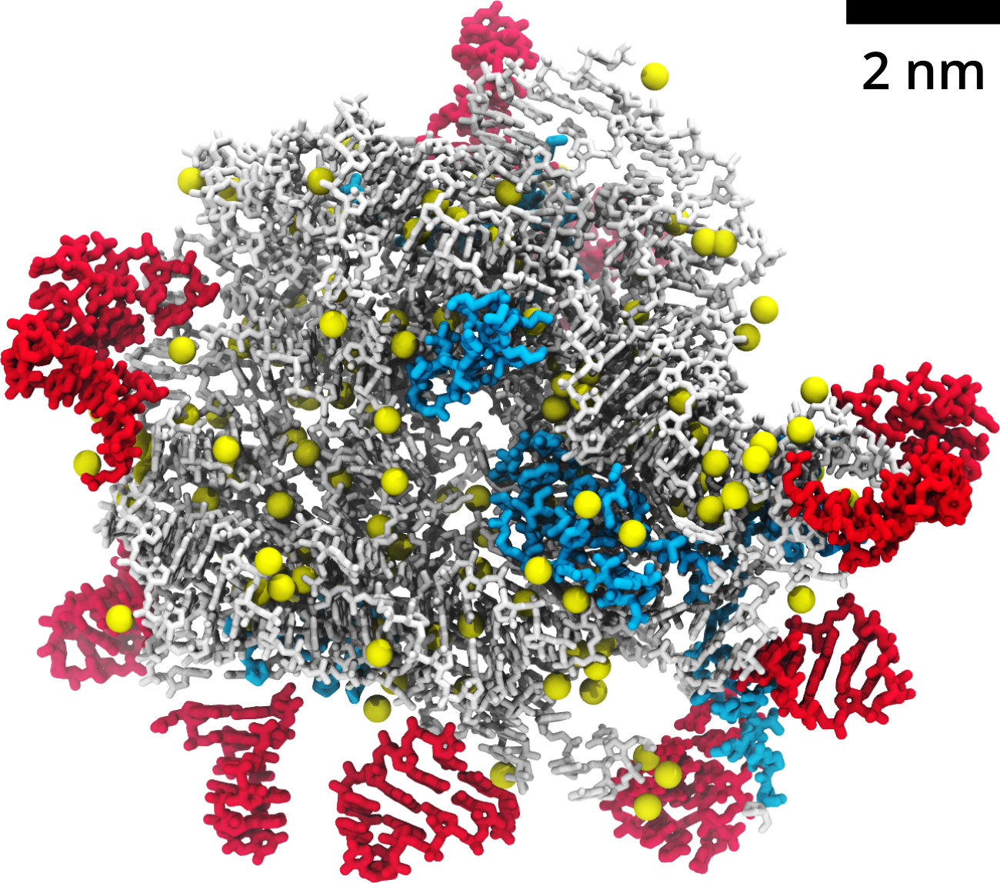
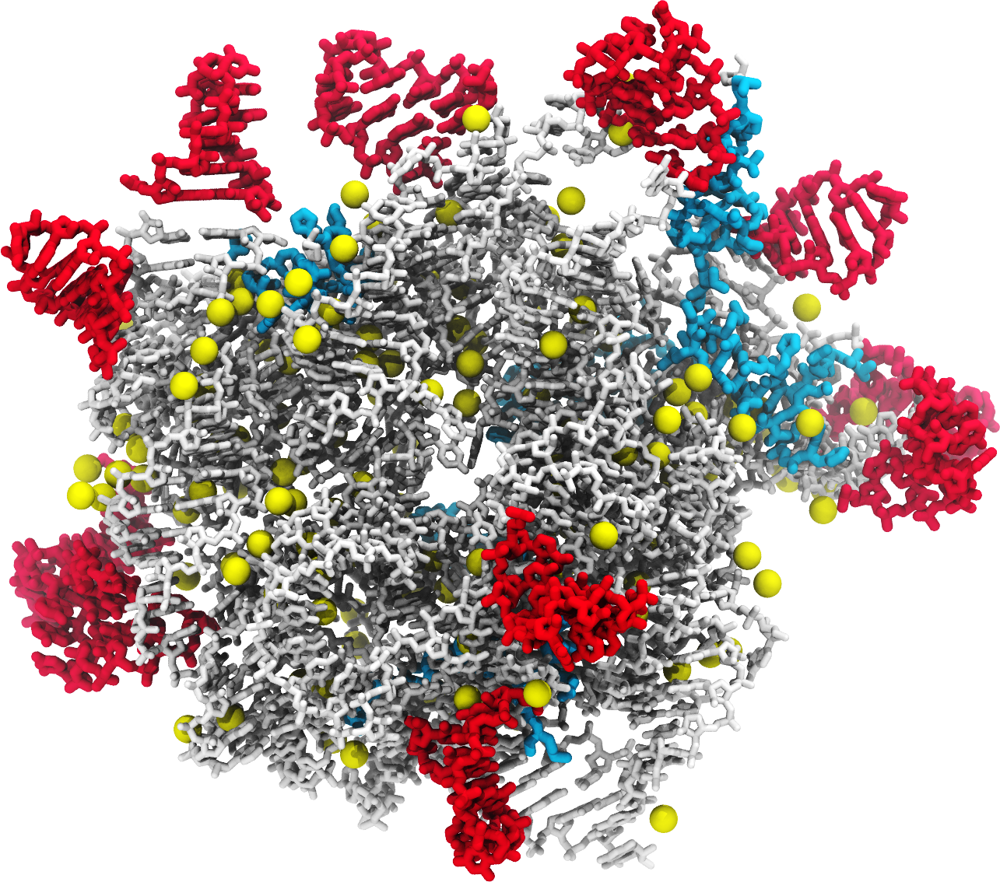
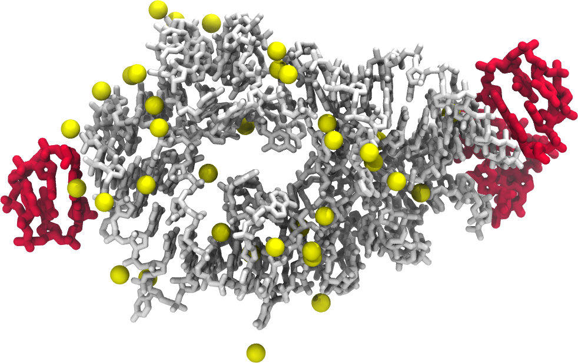
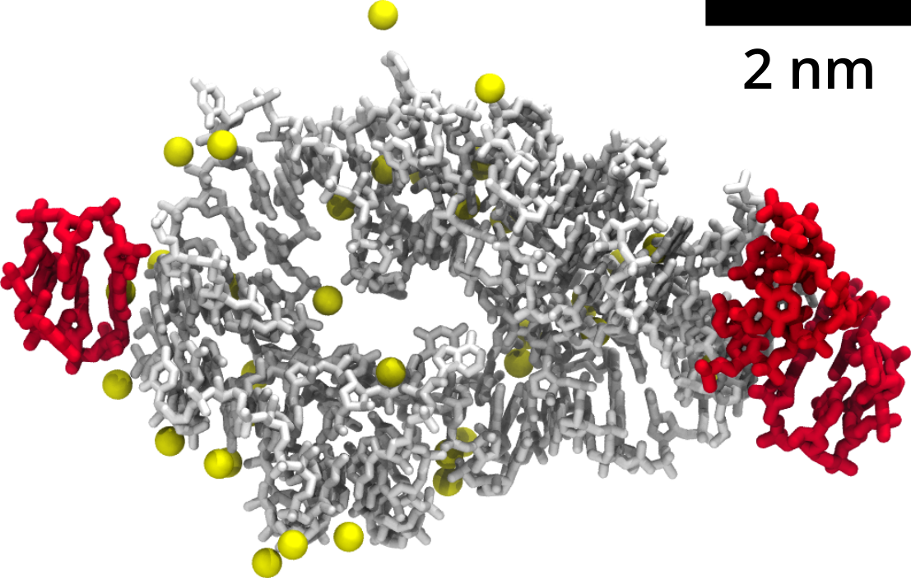
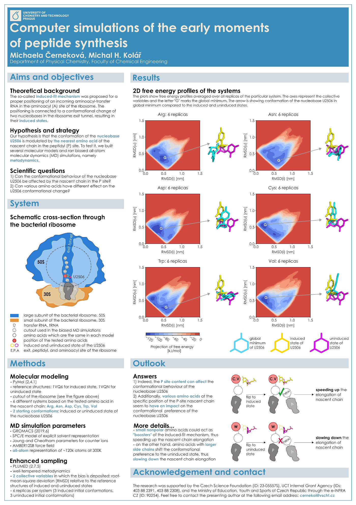
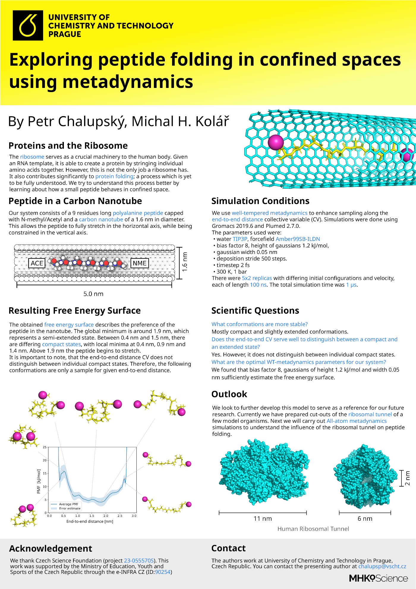

contributed talk at the 7th Users' conference of IT4Innovations in Ostrava, Czechia.
Created using Reveal.js.
Use right arrow for browsing.

Atomistic simulations of ancient ribosomes and their parts
Michal H. Kolář
Bing via DALL-E 3: ribosome predecessor synthesizing a protein in the premordial soup of molecules, black-white line art with blue details, dark background.
Mechanism of amino acid polymerization as occured more than 3.5 billion years ago

23-05557S, 23-05764S
 Hlouchová group
Hlouchová group



Protein Synthesis: Pre-Attack
Protein Synthesis: Bonds Re-Arrangement
Protein Synthesis: Product State
Ribosome evolution
Petrov et al. 2015, PMID: 26621738
big protoribosome: 610 nucleotides

tunnel view

tRNA view
small protoribosome: 134 nucleotides

tunnel view

tRNA view
Summary of simulated systems
big protoribosome (ca 365,000 atoms)
rRNA
rRNA + peptides
small protoribosome (ca 136,000 atoms)
rRNA
rRNA + pL2
rRNA + pL3
rRNA + pL4
rRNA + pL2 + pL3 + pL4
Technical setup
- classical all-atom MD simulations in GROMACS
- Amber family of force fields + SPC/E water + JC ions
- three independent unbiased trajectories 1.1 μs each
GROMACS
- open source code
- mixed openMP/MPI parallelization
- optional GPU accelleration
take this home:
Peptides stabilize ancestral ribosomal RNA (and promote protoribosome aggregation).

